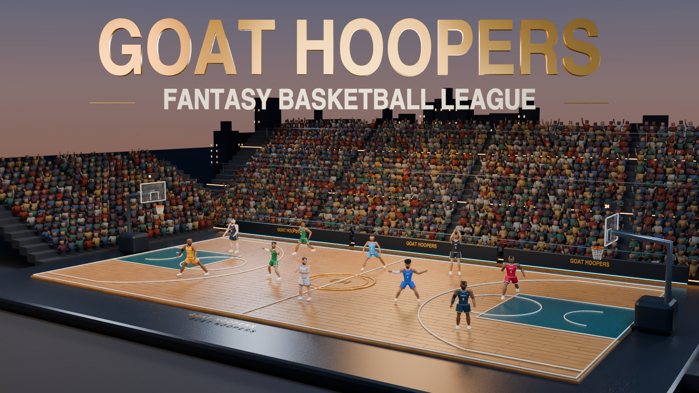
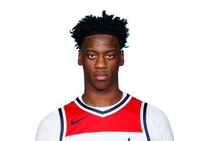

Player of the Week
Nikola Jokić
Josh Diddy’s Roster ↗Somebody unplug this man.
Three columns. One headache. The champ gets to call it good management.
- PPG
- 27.7
- RPG
- 12.9
- APG
- 10.7
2025–26 NBA averages
Palette review · frozen Oct 8 sample content · application controls disabled. Team and player links open the live site.

A 16–5 season meets the defending champion. Sleeper lists Reaves Dropper against Josh Diddy’s Roster in the opener. New season, same target on the champ’s back.
Opening edition: two 2025–26 lookbacks and one preseason watch. Sample editorial; no 2026 scoring week has been played.
Player of the Week
Three columns. One headache. The champ gets to call it good management.
2025–26 NBA averages
Underperformer of the Week
Points: accepted. Rebounds: the group chat has questions.
2025–26 NBA averages

One to watch next week
NeuralNets took him first. We’re watching minutes, not the mixtape.
2025–26 college · BYU
Roster links reflect the current live roster check. These picks are sample opinions, not computed awards or a completed 2026 fantasy week. Jokić and Embiid use prior-season NBA averages; Dybantsa uses college averages.
Lebron Theme Team dropped Lonzo Ball.
Malik Monk and Nikola Jović were dropped from the roster.
T Halibooty dropped Zaccharie Risacher.
Proposed editorial copy for review. Muse has not published this edition. The editorial calendar is separate from the league’s scoring week.
Ten managers. Their rosters. The next matchup.
aidandaly20
Current roster · 2026 preseason
Full team profile ↗Roster anchors: Anthony Edwards / Alperen Şengün / Joel Embiid
Aedan23
Current roster · 2026 preseason
Full team profile ↗Roster anchors: Evan Mobley / Paolo Banchero / Domantas Sabonis
TommyDieselfuel
Current roster · 2026 preseason
Full team profile ↗Roster anchors: Shai Gilgeous-Alexander / Scottie Barnes / Franz Wagner
philbiag
Current roster · 2026 preseason
Full team profile ↗Roster anchors: Victor Wembanyama / Tyrese Maxey / Jalen Brunson
vannweinkauf · 2025 champion
Current roster · 2026 preseason
Full team profile ↗Roster anchors: Nikola Jokić / Stephen Curry / Jayson Tatum
GriffinHealy
Current roster · 2026 preseason
Full team profile ↗Roster anchors: Cade Cunningham / Donovan Mitchell / Amen Thompson
papichooter
Current roster · 2026 preseason
Full team profile ↗Roster anchors: Luka Dončić / Chet Holmgren / Tyrese Haliburton
NeuralNets
Current roster · 2026 preseason
Full team profile ↗Roster anchors: Giannis Antetokounmpo / LaMelo Ball / AJ Dybantsa
2025 context: Under the previous manager as QBs Gremlins.
Current opponent: Ware the Hoes At? ↗lordlx
Current roster · 2026 preseason
Full team profile ↗Roster anchors: LeBron James / Trae Young / Cooper Flagg
TyreseHalibooty
Current roster · 2026 preseason
Full team profile ↗Roster anchors: Devin Booker / Anthony Davis / Bam Adebayo
All 10 teams · 228 current roster players
Rosters and pairings come from Sleeper. Records refer to the current season. The 2025 order uses final historical placements. NeuralNets inherited the 2025 record under QBs Gremlins’ previous manager. Roster anchors are editorial selections checked against current ownership, not a ranked list or declared starting lineup. Open a row to see every player and the full team profile.
Team stats go live when the season tips off.
Quiet on the wire. The league office is waiting for someone to make a move.
Earlier sample editions stay available as the season moves on.